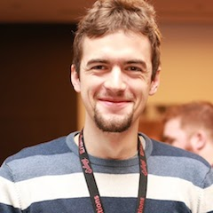

Latest News from the MongooseIM Team
Tutorial: Building Chatbots and Chatty Things
Michał PiotrowskiMongooseIM Technical Leader at Erlang Solutions
Latest News from the MongooseIM Team
Since my last presentation a lot of good happened in our platform. We added support for PubSub, MUC light, REST API, HTTP file upload. We added tons of improvements in 2.0.0 and 2.0.1. Next on the roadmap is 2.1 and in this talk we will present its highlights. We will also present a concept of continuous load testing how does it help us and how it was implemented in Tide - one of the latest addition to the MongooseIM Platform family.
Talk objectives:
- Present updates to the MongooseIM platform, new features and components
- Introduce concept of continues load tests and its usage
- Present our attitude to building open source product
Target audience:
- People interested in Instant Messaging, IoT and load testing
Video
Tutorial: Building Chatbots and Chatty Things
Target Audience:
Software Developers & Engineers
Prerequisites:
Knowledge and experience of any programming language that has XMPP or HTTP client libraries, e.g. Erlang or Elixir.
Objectives:
A better understanding of tools for building and maintaining messaging systems based on the MongooseIM platform. Understand the basics of chatbots and MongooseIM APIs.
Outline:
This one-day tutorial presents tools for building and maintaining messaging systems with MongooseIM platform. It gives insight into the deployment and configuration of a fully featured messaging server, and also monitoring tools which allow support engineers to inspect and monitor running system. It exercises installing client libraries on devices like RaspberryPi as well as implementing chatbots that can run on such devices.
The course contains the following topics:
- Introduction to MongooseIM Platform
- Installing the messaging service with MongooseIM Deploy
- Monitoring MongooseIM server
- Installing MongooseIM client libraries on RaspberryPi
- Developing MongooseIM chatbots
About Michał
Michał has been doing Erlang for 7 years already. Started this adventure at AGH University of Science and Technology in Krakow. Later he could use it in his professional work at Brainly.com (zadane.pl back then). In Jan 2012 Michał joined Erlang Solutions where he boosted his Erlang knowledge and expertise. For the last 5 years he was involved in numerous project aiming to deliver scalable and robust chat platforms based on MongooseIM and XMPP. GitHub:
michalwski
Twitter:
@michalwski